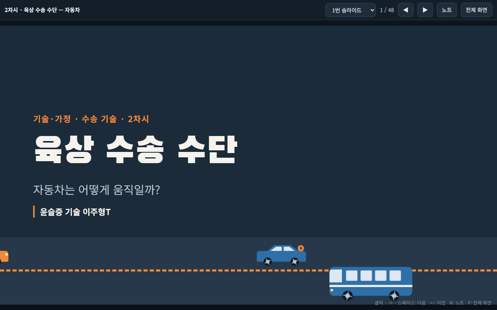
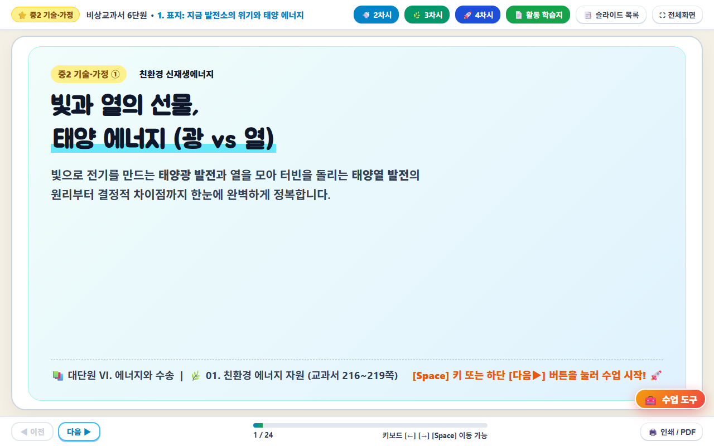
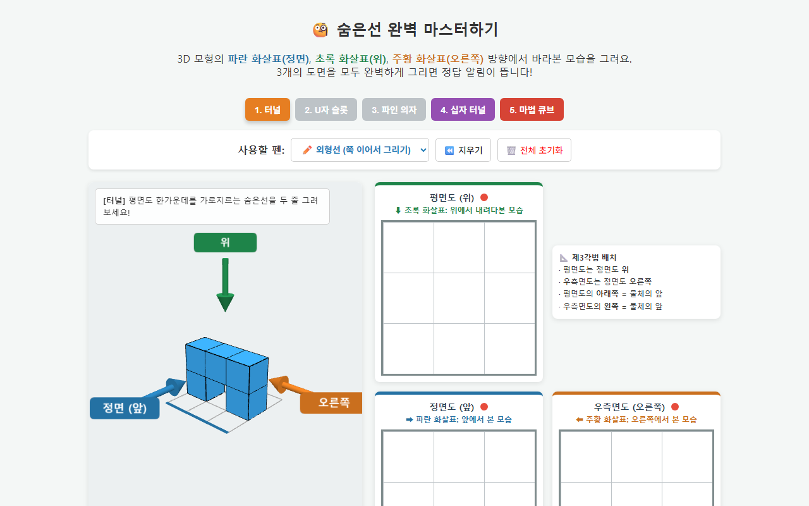
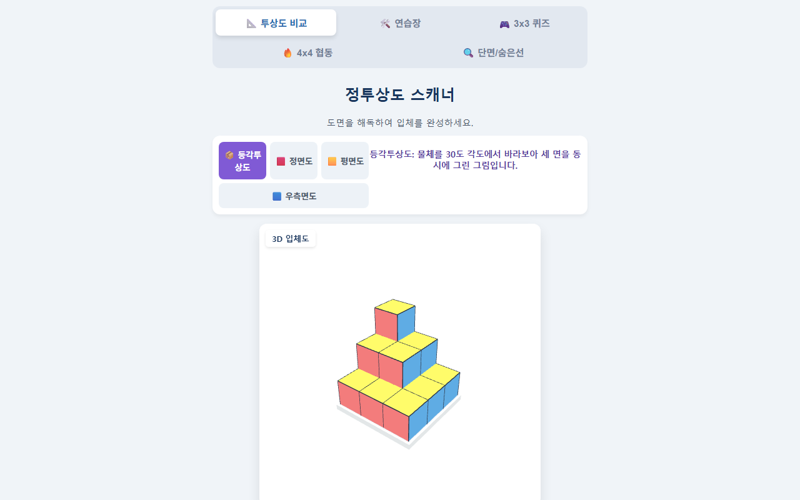
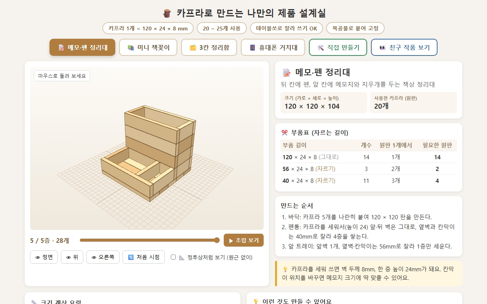

수업 슬라이드랑 웹앱, 저는 이렇게 만들어요
윤슬중 기술 이주형T
주형T 수업자료실 · leejuhyung-lessons.vercel.app
1
세 가지 개념
웹앱, 아티팩트, 스킬
2
결과물 둘러보기
실제 수업 자료 시연
3
아티팩트와 스킬
스킬 등록 방법, 내가 쓰는 스킬 2개
4
제작 과정
요청 → 확인 → 수정
5
주의할 점 · 시작하기
처음 해 볼 것, 질의응답
AI로 만드는 수업 자료 · 이주형T · 02
1부
오늘 계속 나오는 세 단어부터 정리하고 갈게요
AI로 만드는 수업 자료 · 이주형T · 03
AI로 만드는 수업 자료 · 이주형T · 04
1부 · 세 가지 개념
웹앱
누르면 반응하는 웹페이지
아티팩트
AI가 만들어 링크로 주는 결과물
슬라이드·문서·웹앱이 대화 옆 창에 바로 열려요
스킬
내 방식을 적어 둔 설명서
한 번 등록해 두면 매번 말 안 해도 그 방식대로 만들어 줘요
AI로 만드는 수업 자료 · 이주형T · 05
개념 ① · 웹앱
웹앱 = 버튼이 살아 있는 웹페이지. 주소창으로 여는 그 웹페이지랑 같은 기술이에요
개념 ① · 웹앱
수업.html
크롬·엣지
USB
메신저
게시판
설치 불필요
파일을 더블클릭하면 크롬·엣지에서 바로 열림
옮기기 쉬움
USB, 메신저, 이메일로 파일 하나만 보내면 됨
인터넷 없이도 동작
대부분 그대로 동작 (영상 링크만 인터넷 필요)
어디든 게시 가능
패들렛, 학급 게시판, 자료실 사이트 등
AI로 만드는 수업 자료 · 이주형T · 06
2부
AI로 만드는 수업 자료 · 이주형T · 07
2부 · 결과물 둘러보기
교과서 단원 순서로 정리한 자료
모두 HTML 파일 하나라서 브라우저로 바로 열림
AI로 만드는 수업 자료 · 이주형T · 08
예시 ① · 수업 슬라이드

48장 · 사진 33장 · 엔진 실험실로 바로 연결

교과서 단원·쪽수 표시 · 수업 도구 버튼
AI로 만드는 수업 자료 · 이주형T · 09
예시 ② · 체험형 수업 웹앱
AI로 만드는 수업 자료 · 이주형T · 10
예시 ③ · 연습 도구

3D를 돌려 보고 세 도면을 그리면 초록불

도면 보고 블록 쌓기 · 단계별 보스 문제
AI로 만드는 수업 자료 · 이주형T · 11
예시 ④ · 게임형 복습
반 전체(최대 35명)가 함께 들어와 경주
발전 사당을 깨우는 3D 탐험 · 1~4차시 복습
AI로 만드는 수업 자료 · 이주형T · 12
예시 ⑤ · 저장하고 공유하기

1 반·이름·비밀번호로 입장
2 카프라를 놓을 때마다 자동 저장
3 같은 반 친구 작품을 3D로 보기
저장은 무료 서버(Supabase) 사용.
다른 컴퓨터에서도 이어서 작업 가능.
AI로 만드는 수업 자료 · 이주형T · 13
3부
오늘 제일 중요한 부분이에요
AI로 만드는 수업 자료 · 이주형T · 14
3부 · 개념 ② 아티팩트
대화 창
엔진 원리를 직접 해 보는 웹앱 만들어 줘
만들었어요. 오른쪽 창에서 열어 보세요.
가속 버튼을 더 크게 해 줘
아티팩트 창 · 엔진 실험실
고쳐 달라고 하면 같은 링크가 바로 바뀌고, 공유하면 누구나 링크로 열어요
AI로 만드는 수업 자료 · 이주형T · 15
3부 · 개념 ② 아티팩트
| 구분 | 아티팩트 링크 | HTML 파일 |
|---|---|---|
| 여는 법 | 링크 클릭 (인터넷 필요) | 파일 더블클릭 |
| 고치기 | 대화로 말하면 바로 | 고친 파일을 다시 받기 |
| 공유 | 공유 메뉴에서 링크 열기 | USB·메신저·패들렛 |
| 이럴 때 | 만들고 다듬는 동안 | 교실 PC에서 수업할 때 |
제 방법: 아티팩트로 다듬고 → 완성되면 HTML 파일로 받아 자료실에 올려요
AI로 만드는 수업 자료 · 이주형T · 17
3부 · 내가 쓰는 스킬
한 번 적어 두면
매번 설명 안 해도 돼요
SKILL.md
모둠 활동 넣지 않기
퀴즈는 2~3장마다
글씨는 교실 뒤 기준
교과서 그림 넣기
매번 같은 방식
AI로 만드는 수업 자료 · 이주형T · 18
3부 · 내가 쓰는 스킬
① 요청
“교과서 6단원 2차시로 수업 슬라이드 만들어 줘”
② 스킬 찾기
요청에 맞는 스킬을 골라 설명서를 먼저 읽음
③ 규칙대로 제작
글꼴·색·시간 배분·퀴즈 방식까지 적힌 대로
④ 결과물
바로 수업에 쓸 슬라이드·웹앱
스킬 파일은 이름 · 언제 쓰는지 · 지킬 규칙을 적은 문서 한 장이에요
AI로 만드는 수업 자료 · 이주형T · 19
3부 · 개념 ③ 스킬
---
name: 우리반-퀴즈슬라이드
description: 수업 슬라이드를 만들 때 사용. 퀴즈는 점수 없이 손 들기로.
---
꼭 지킬 것
- 모둠 활동은 넣지 않는다
- 퀴즈는 2~3장마다, 생활 속 소재로
- 글자는 교실 뒤에서도 보이게
스킬 이름
언제 쓰는지. AI가 이 내용을 보고 스킬을 고름
내 규칙. 평소 말투로 자유롭게 작성
AI로 만드는 수업 자료 · 이주형T · 20
3부 · 개념 ③ 스킬
1
내 규칙 적기
꼭 하는 것·절대 안 하는 것 3~10줄을 메모장에 작성
2
스킬로 만들기
“이 규칙을 스킬로 만들어 줘” → 스킬 파일 받기
3
등록하기
Claude → Customize(사용자 지정) → Skills에서 ZIP 올리기
4
켜 두고 쓰기
관련 요청을 하면 자동으로 적용
메뉴 이름과 위치는 Claude 업데이트·요금제에 따라 조금 다를 수 있음
AI로 만드는 수업 자료 · 이주형T · 21
스킬 ① · 수업 슬라이드 (lesson-slides)
학생 참여는 퀴즈와 손 들기로
팔로 O/X, 손가락 번호, 함께 외치기
요구르트, 스마트폰, 반려견처럼 친근한 것
중간중간 넣고 그림 번호·쪽수 표시
설명 장이 3장 넘게 이어지지 않게
통계·인용은 만들지 않고, 틀린 교과서 내용은 노트에
AI로 만드는 수업 자료 · 이주형T · 22
스킬 ① · 수업 슬라이드 (lesson-slides)
| 구간 | 들어가는 장 | 시간 |
|---|---|---|
| 도입 | 표지 · 학습 목표 · 복습 퀴즈 · 생각 열기 | 5~6분 |
| 전개 1 | 개념 설명(교과서 그림) + 확인 퀴즈 | 12~15분 |
| 전개 2 | 단계별로 바뀌는 원리 장면 + 퀴즈 | 10~13분 |
| 전개 3 | 비교표 · 읽을거리 · 상황 퀴즈 · 영상 | 7~11분 |
| 정리 | 적용 퀴즈 · 3줄 요약 · 다음 시간 예고 | 5~6분 |
16~20장 · 퀴즈 5~6개 · 시간 배분은 발표자 노트에
AI로 만드는 수업 자료 · 이주형T · 23
스킬 ② · 수업 웹앱
1
자료 먼저 읽기
질문하기 전에 교과서·대본·평가 계획부터 읽기
2
질문은 최대 3개
이번 차시 범위 · 활동 수준 · 빔인지 학생 기기인지
3
45분 시간표부터
설명은 5~10분, 나머지는 활동 · 10~14화면
4
영상은 있는지 확인
실제 영상인지 확인하고 새 탭 링크로, 3개 이하
5
직접 열어서 검증
오류 0건, 버튼·채점 동작, 교실 뒤에서 읽히는 글씨
AI로 만드는 수업 자료 · 이주형T · 24
스킬 ② · 수업 웹앱
우산, 책가방, 케첩통, 급식실 줄처럼 매일 겪는 것
“+3” 배지만 보여 주면 “하나 더” 하며 계속 생각함
맨 뒷자리에서 읽히는지로 크기 결정
화면은 타이머·집계만, 아이디어는 종이와 말로
스킬 받기
오늘 본 두 스킬은 자료실 사이트 하단에 올려 둠
AI로 만드는 수업 자료 · 이주형T · 25
3부 · 다른 사람이 만든 스킬
1
skills
github.com/mattpocock/skills
계획을 말하면 AI가 질문을 던져 빈틈을 찾아 줌
★ 32.9만
2
superpowers
github.com/obra/superpowers
브레인스토밍 → 계획 → 테스트 순서로 일하게 함
★ 32.1만
3
skills
github.com/anthropics/skills
Anthropic 공식 예시. 워드·엑셀·PPT·PDF 스킬
★ 19.8만
4
ui-ux-pro-max-skill
github.com/nextlevelbuilder/ui-ux-pro-max-skill
색·글꼴·배치를 골라 웹앱 화면을 깔끔하게
★ 15.2만
5
awesome-claude-skills
github.com/ComposioHQ/awesome-claude-skills
분야별 스킬 링크 모음집
★ 7.9만
★ 별(스타) 수는 2026년 11월 기준 · 1·2번은 개발자용 · 남이 만든 스킬은 내용을 읽어 보고 등록하기
AI로 만드는 수업 자료 · 이주형T · 26
3부 · 다른 사람이 만든 스킬
가장 쉬운 방법 · Claude에게 링크 주고 부탁하기 (설정에 따라 안 될 수도 있음)
“깃허브 링크 + 이 스킬 등록할 수 있게 만들어 줘”
안 되면 직접 올리기 (ZIP)
1
ZIP 내려받기
깃허브 저장소에서 초록색 Code 버튼 → Download ZIP
2
스킬 폴더 찾기
압축을 풀고 SKILL.md가 들어 있는 폴더 하나 고르기
3
폴더째 압축
그 폴더를 우클릭해서 ZIP으로 압축 (안의 파일만 압축하면 인식 안 됨)
4
올리고 켜기
Customize(사용자 지정) → Skills → + → Upload a skill → 켜기
AI로 만드는 수업 자료 · 이주형T · 27
3부 · 다른 사람이 만든 스킬
| 스킬 | Claude 앱 (웹·데스크톱) | Claude Code (터미널 명령어) |
|---|---|---|
| 1 skills | 폴더를 하나씩 골라 올리기 (예: grill-me) | claude plugin install mattpocock-skills@claude-plugins-official |
| 2 superpowers | 폴더를 하나씩 골라 올리기 (예: brainstorming) | /plugin install superpowers@claude-plugins-official |
| 3 skills (공식) | 유료 요금제엔 이미 있음 → 켜기만 | /plugin marketplace add anthropics/skills |
| 4 ui-ux-pro-max | 올리기용 파일 없음 → Claude Code 권장 | /plugin marketplace add nextlevelbuilder/ui-ux-pro-max-skill /plugin install ui-ux-pro-max@ui-ux-pro-max-skill |
| 5 awesome-claude-skills | 링크 모음 → 들어간 저장소에서 같은 방법 | — |
AI로 만드는 수업 자료 · 이주형T · 28
4부
스킬이 있으면 실제로 어떻게 주고받는지 보여 드릴게요
AI로 만드는 수업 자료 · 이주형T · 29
AI로 만드는 수업 자료 · 이주형T · 30
4부 · 제작 과정
1
교과서·지도서 PDF, 기존 PPT, 대본
2
몇 차시로, 어디까지, 어떤 활동으로
3
스킬 규칙대로 만든 첫 버전
4
학생 자리에서 끝까지 넘겨 보기
5
화면 캡처 + 어디가 이상한지
6
수업 후 느낀 점을 스킬에 한 줄 추가
3~5단계는 여러 번 반복
4부 · 제작 과정
슬라이드
“교과서 6단원 2차시(○○~○○쪽)로 수업 슬라이드 만들어 줘. 퀴즈는 O/X 위주로.”
수업 웹앱
“이 PPT로 45분 수업 웹앱 만들어 줘. 학생이 태블릿으로 직접 해 볼 수 있게.”
고치기
“5장 그림이 글자와 겹쳐. 그림을 오른쪽으로 옮기고 글자는 왼쪽에.”
무엇으로 · 어디까지 · 학생이 무엇을 하는지를 넣으면 되묻는 질문이 줄어요
AI로 만드는 수업 자료 · 이주형T · 31
4부 · 실제 사례
내가 보낸 것
돌아온 것
캡처 + 증상 + “전체 점검” 한마디면 다른 곳까지 같이 봐 줘요
AI로 만드는 수업 자료 · 이주형T · 32
4부 · 스킬 키우기
수업해 보니
“퀴즈가 모자라 시간이 남았어”
요청
“이 내용을 스킬에 추가해 줘”
다음부터
처음부터 퀴즈 5~6개로 제작
내 스킬에 실제로 들어 있는 문장
“분량이 모자라다는 피드백이 오면 퀴즈 장을 더한다.”
“영상 길이는 10분 이하만.”
AI로 만드는 수업 자료 · 이주형T · 33
5부
올리기 전에 볼 것, 그리고 처음 해 볼 것
AI로 만드는 수업 자료 · 이주형T · 34
5부 · 인터넷에 올리기
깃허브 GitHub
파일 보관소
파일을 올려 두는 창고. Pages 기능을 켜면 여기서도 바로 주소가 생겨요
버셀 Vercel
주소를 만들어 주는 곳
깃허브와 연결해 두면 ○○.vercel.app 주소가 생겨요. 제 자료실도 여기 있어요
넷리파이 Netlify
버셀과 같은 역할
폴더를 끌어다 놓기만 해도 ○○.netlify.app 주소가 생겨요
셋 다 무료 요금제가 있어서 수업 자료 올리는 데는 충분해요. (2026년 11월 기준)
AI로 만드는 수업 자료 · 이주형T · 35
5부 · 인터넷에 올리기
1
폴더 준비
첫 화면 파일 이름을 index.html로 바꿔 폴더 하나에 넣기
2
사이트 열기
app.netlify.com/drop 접속 (무료 가입 후 로그인)
3
끌어다 놓기
폴더를 화면에 그대로 드래그
4
주소 받기
○○.netlify.app 주소가 바로 생김
가입 없이도 올릴 수 있지만, 그러면 가입할 때까지 임시 비밀번호가 걸려요.
AI로 만드는 수업 자료 · 이주형T · 36
5부 · 인터넷에 올리기
① 저장소 만들기
새 저장소를 만들고 Public(공개)으로
② 파일 올리기
Add file → Upload files로 끌어다 놓기 (첫 화면은 index.html)
③ Pages 켜기
Settings → Pages에서 main 브랜치 선택 후 Save
④ 주소 생김
1~2분 뒤 아이디.github.io/저장소이름
파일을 다시 올리면 사이트도 알아서 바뀌어요. 주소를 짧게 하고 싶으면 버셀을 연결하면 돼요.
공개 저장소는 누구나 볼 수 있으니, 학생 이름이 든 파일은 올리지 않기
AI로 만드는 수업 자료 · 이주형T · 37
5부 · 꼭 확인할 것
교과서 그림은 출처·쪽수 표시, 영화 포스터 같은 다른 저작물은 넣지 않기
학생 이름·학번, API 키가 파일 안에 남아 있지 않은지
통계·인용·영상 링크는 실제로 있는지, 교과서와 맞는지
공개하려면 허락을 받고, 만든 사람을 표시
AI로 만드는 수업 자료 · 이주형T · 38
5부 · 시작하기
1
설명이 길어 학생이 지루해하던 차시
2
교과서 쪽수 + 학생이 할 활동 한 가지
3
가장 거슬리는 것 하나만 말하기
‘내 수업에서 꼭 하는 것·절대 안 하는 것’ 3줄만 적어 두면 그게 첫 스킬이에요
AI로 만드는 수업 자료 · 이주형T · 39
질문 · 이야기 나누기
오늘 본 자료랑 스킬 파일은 여기서 받으시면 돼요
윤슬중 기술 이주형T